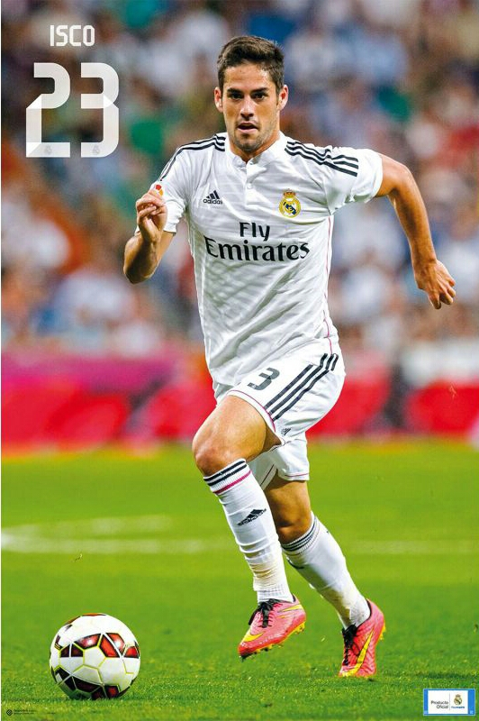
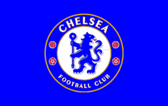

Hello, my name is Chris Rendon and I welcome to my
About Me page. This is where you will find information about me.
This page contains some pictures of things that I like, along with some links to other sites. I hope you enjoy your time visiting this page, thank you.


One of my favorite teams is Chelsea, a team from England stationed in London. I play as a midfield player and my favorite
number is "23"This is the logo of the English soccer team Chelsea, I started following them in 2010 when they won the Premier League
(English Championship). Ever since then I have followed them, when they won the Champion's League in 2012, and even in
their worst moments when they ended the season in 10th place in 2015.